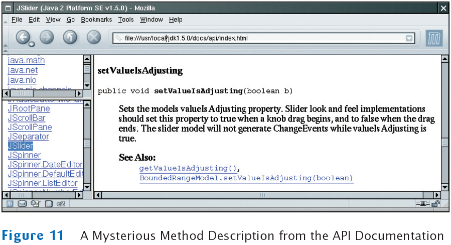

Chapter 14
Graphical User Interfaces
Chapter Goals
- To use inheritance to customize frames
- To understand how user-interface components are added to a container
- To understand the use of layout managers to arrange user-interface components in a container
- To become familiar with common user-interface components, such as buttons, combo boxes, text areas, and menus
- To build programs that handle events from user-interface components
- To learn how to browse the Java documentation
Using Inheritance to Customize Frames
- Use inheritance for complex frames to make programs easier to understand
- Design a subclass of JFrame
- Store the components as instance fields
- Initialize them in the constructor of your subclass
- If initialization code gets complex, simply add some helper methods
Example: Investment Viewer Program
Example: Investment Viewer Program
Of course, we still need a class with a main method:
Self Check
- How many Java source files are required by the investment viewer application when we use inheritance to define the frame class?
- Why does the InvestmentFrame constructor call setSize(FRAME_WIDTH, FRAME_HEIGHT), whereas the main method of the investment viewer class in Chapter 12 called frame.setSize(FRAME_WIDTH, FRAME_HEIGHT)?
Answers
- Three: InvestmentFrameViewer, InvestmentFrame, and BankAccount.
- The InvestmentFrame constructor adds the panel to itself.
Layout Management
- Up to now, we have had limited control over layout of components
- When we used a panel, it arranged the components from the left to the right
- User-interface components are arranged by placing them inside containers
- Each container has a layout manager that directs the arrangement of its components
- Three useful layout managers:
- border layout
- flow layout
- grid layout
Layout Management
Border Layout
Grid Layout
Grid Bag Layout
- Tabular arrangement of components
- Columns can have different sizes
- Components can span multiple columns
- Quite complex to use
- Not covered in the book
- Fortunately, you can create acceptable-looking layouts by nesting panels
- Give each panel an appropriate layout manager
- Panels don't have visible borders
- Use as many panels as needed to organize components
Self Check
- How do you add two buttons to the north area of a frame?
- How can you stack three buttons on top of each other?
Answers
- First add them to a panel, then add the panel to the north end of a frame.
- Place them inside a panel with a GridLayout that has three rows and one column.
Choices
- Radio buttons
- Check boxes
- Combo boxes
Radio Buttons
Radio Buttons
Borders
- Place a border around a panel to group its contents visually
- EtchedBorder: three-dimensional etched effect
- Can add a border to any component, but most commonly to panels:
JPanel panel = new JPanel();
panel.setBorder(new EtchedBorder());
- TitledBorder: a border with a title
panel.setBorder(new TitledBorder(new EtchedBorder(), "Size"));
Check Boxes
Combo Boxes
- For a large set of choices, use a combo box
- Uses less space than radio buttons
- "Combo": combination of a list and a text field
- The text field displays the name of the current selection

Combo Boxes
Radio Buttons, Check Boxes, and Combo Boxes
- They generate an ActionEvent whenever the user selects an item
- An example: ChoiceFrame

- All components notify the same listener object
- When user clicks on any component, we ask each component for its current content
- Then redraw text sample with the new font
Classes of the Font Choice Program
File ChoiceFrameViewer.java
File ChoiceFrame.java
Self Check
- What is the advantage of a JComboBox over a set of radio buttons? What is the
disadvantage?
- Why do all user interface components in the ChoiceFrame class share the same
listener?
- Why was the combo box placed inside a panel? What would have happened if it
had been added directly to the control panel?
Answers
- If you have many options, a set of radio buttons takes up a large area. A combo
box can show many options without using up much space. But the user cannot
see the options as easily.
- When any of the component settings is changed, the program simply queries all
of them and updates the label.
- To keep it from growing too large. It would have grown to the same width and
height as the two panels below it.
Advanced Topic: Layout Management
- Step 1: Make a sketch of your desired component layout
- Step 2: Find groupings of adjacent components with the same layout
Advanced Topic: Layout Management
- Step 3: Identify layouts for each group
- Step 4: Group the groups together
- Step 5: Write the code to generate the layout
Menus
- A frame contains a menu bar
- The menu bar contains menus
- A menu contains submenus and menu items

Menu Items
A Sample Program
- Builds up a small but typical menu
- Traps action events from menu items
- To keep program readable, use a separate method for each menu or set of related menus
- createFaceItem: creates menu item to change the font face
- createSizeItem
- createStyleItem
File MenuFrameViewer.java
File MenuFrame.java
Self Check
- Why do JMenu objects not generate action events?
- Why is the name parameter in the createFaceItem method declared as final?
Answers
- When you open a menu, you have not yet made a selection. Only JMenuItem
objects correspond to selections.
- The parameter variable is accessed in a method of an inner class.
Text Areas
- Use a JTextArea to show multiple lines of text
- You can specify the number of rows and columns:
final int ROWS = 10;
final int COLUMNS = 30;
JTextArea textArea = new JTextArea(ROWS, COLUMNS);
- setText: to set the text of a text field or text area
- append: to add text to the end of a text area
- Use newline characters to separate lines:
textArea.append(account.getBalance() + "\n");
- To use for display purposes only:
textArea.setEditable(false); // program can call setText and append to change it
Text Areas
File TextAreaViewer.java
Self Check
- What is the difference between a text field and a text area?
- Why did the TextAreaViewer program call textArea.setEditable(false)?
- How would you modify the TextAreaViewer program if you didn't want to use scroll bars?
Answers
- A text field holds a single line of text; a text area holds multiple lines.
- The text area is intended to display the program output. It does not collect user input.
- Don't construct a JScrollPane and add the textArea object directly to the frame.
Exploring the Swing Documentation
- For more sophisticated effects, explore the Swing documentation
- The documentation can be quite intimidating at first glance
- Next example will show how to use the documentation to your advantage
Example: A Color Mixer
- It should be fun to mix your own colors, with a slider for the red, green, and blue values
Example: A Color Mixer
- How do you know if there is a slider?
- Buy a book that illustrates all Swing components
- Run sample application included in the JDK that shows off all Swing components
- Look at the names of all of the classes that start with J
- JSlider seems like a good candidate
- Next, ask a few questions:
- How do I construct a JSlider?
- How can I get notified when the user has moved it?
- How can I tell to which value the user has set it?
- After mastering sliders, you can find out how to set tick marks, etc.
The Swing Demo Set

Example: A Color Mixer
- There are over 50 methods in JSlider class and over 250 inherited methods
- Some method descriptions look scary

- Develop the ability to separate fundamental concepts from ephemeral minutiae
How do I construct a JSlider?
- Look at the Java version 5.0 API documentation
- There are six constructors for the JSlider class
- Learn about one or two of them
- Strike a balance somewhere between the trivial and the bizarre
- Too limited:
public JSlider()
Creates a horizontal slider with the range 0 to 100 and an initial value of 50
- Bizarre:
public JSlider(BoundedRangeModel brm)
Creates a horizontal slider using the specified BoundedRangeModel
- Useful:
public JSlider(int min, int max, int value)
Creates a horizontal slider using the specified min, max, and value.
How can I get notified when the user has moved a JSlider?
- There is no addActionListener method
- There is a method
public void addChangeListener(ChangeListener l)
- Click on the ChangeListener link to learn more
- It has a single method:
void stateChanged(ChangeEvent e)
- Apparently, method is called whenever user moves the slider
- What is a ChangeEvent?
- It inherits getSource method from superclass EventObject
- getSource: tells us which component generated this event
How can I tell to which value the user has set a JSlider?
- Now we have a plan:
- Add a change event listener to each slider
- When slider is changed, stateChanged method is called
- Find out the new value of the slider
- Recompute color value
- Repaint color panel
- Need to get the current value of the slider
- Look at all the methods that start with get; you find:
public int getValue()
Returns the slider's value.
The Components of the SliderFrame
Classes of the SliderFrameViewer Program

File SliderFrameViewer.java
SliderFrame.java
Self Check
- Suppose you want to allow users to pick a color from a color dialog box. Which
class would you use? Look in the API documentation.
- Why does a slider emit change events and not action events?
Answers
- JColorChooser.
- Action events describe one-time changes, such as button clicks. Change events describe continuous changes.
Visual Programming